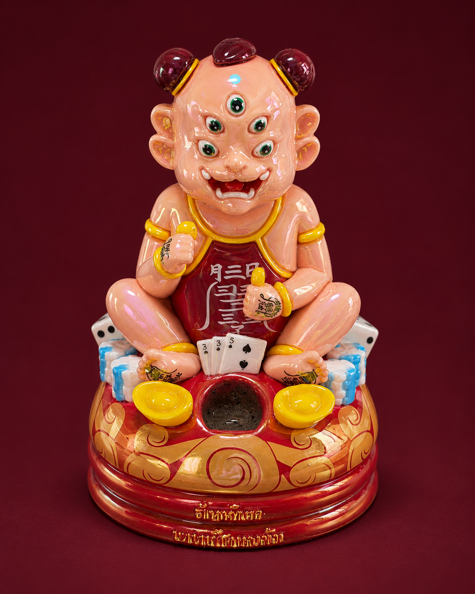

加持儀式 · Tamnan Mueang Korat
Ajarn Khaek Muntra Siam 參與“Tamnan Mueang Korat Charoen Suk 90”儀式，畫面記錄了聖線、僧眾與儀式現場。
44秒 · 影像來源：Muntra Siam 頻道，發佈於2026年6月11日MUJEEN · STORIES
逐尊書寫、儀式與信眾的影像記錄
走近 Ajarn Khaek Muntra Siam 的故事

PERSONAL INSCRIPTIONS
填入裝藏材料後，Ajarn Khaek Muntra Siam 再逐尊親手書寫符印與符文，用心對待每處細節。
這裡的“書寫”，指填入裝藏材料之後，再次在神像上親筆書寫符印與符文。老師逐尊完成這一過程，再進行迎請前的照料與準備。



THE TEACHINGS
瞭解 MUJEEN 的信仰藝術，以及 Ajarn Khaek Muntra Siam 運用於儀式、裝藏材料和逐尊親筆書寫的茅山道教風水之學。從品牌系列到供奉意義，逐步認識每一尊作品。
預約依公佈的時間分階段開放。
瞭解作品與儀式準備DOOR GUARDIANS
在中國傳統信仰中，門神寓意守護家宅與吉祥。成對安置於入口，為生活空間增添一層供奉的意義。
門神屬於另一組供奉對象，可在認識三尊神祇之外，進一步瞭解其獨有寓意。
瞭解門神與安置方式 ↗
THE WORLD OF MUJEEN
於 Wihan Sian Muntra Siam


A PLACE OF DEVOTION
一同禮敬與祈願
於 Wihan Sian Muntra Siam
影像記錄了 Wihan Sian Muntra Siam 建設期間的禮敬氛圍。如今，神殿建設已全部完成。
THE TEACHER & THE COMMUNITY
從神殿中的神像，到眾人共同參與的儀式，這些照片通過 Ajarn Khaek 與現場信眾，記錄了 Muntra Siam 的另一面。
觀看儀式影像
聖水沐浴儀式照片： TC News Station · 2026年6月29日 ↗
RITUAL ARCHIVE
六部儀式影像，配有泰語、中文與英語說明，幫助瞭解各場儀式的畫面與背景。
Ajarn Khaek Muntra Siam 參與“Tamnan Mueang Korat Charoen Suk 90”儀式，畫面記錄了聖線、僧眾與儀式現場。
44秒 · 影像來源：Muntra Siam 頻道，發佈於2026年6月11日四耳五眼神 Maha Kamnoet Duang Maha Chak 儀式記錄，從白天到夜間點燭，展現 Ajarn Khaek 參與儀式的過程。
44秒 · 影像來源：Muntra Siam 頻道，發佈於2022年3月21日從鳴鑼、供品到儀式準備，記錄參與者表達敬意的時刻。
44秒 · 影像來源：Muntra Siam 頻道，發佈於2024年Ajarn Khaek Muntra Siam 為參與者主持儀式，影像呈現了儀式頭冠與現場細節。
44秒 · 影像來源：Muntra Siam 頻道，發佈於2025年8月19日從燈火與成排的燈盞，到 Ajarn Khaek Muntra Siam 主持儀式前的準備。
影像來源：Muntra Siam 頻道，發佈於2024年記錄神殿內的儀式準備、符文、供品與共同參與的信眾。
影像來源：Muntra Siam 頻道，發佈於2025年三語說明為畫面背景的編輯文字，並非對白的逐字翻譯。歷史儀式影像用於介紹 Muntra Siam 的儀式背景，並非 MUJEEN 系列的儀式記錄。
COMMUNITY STORIES
在 Muntra Siam 頻道的訪談中，中獎家庭與 Ajarn Khaek Muntra Siam 一同分享他們的親身經歷。
影像中，家庭講述了五張彩票中得一等獎、獎金合計三千萬泰銖的經歷，以及與 Ajarn Khaek 的聯繫。2025年11月7日的 Daily News 報道了同一事件，並指出中獎者為家中的母親。
THE MUJEEN PHILOSOPHY
MUJEEN 邀您從神祇寓意開始，逐步認識系列的藝術特色，以及供奉背後的儀式。
逐尊書寫與裝藏記錄，將信仰故事與每尊神像上的實際付出聯繫起來。